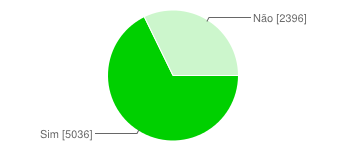
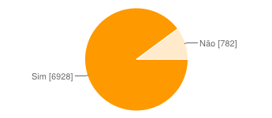

Capítulo 7
Ideias, opiniões, pontos-de-vista
pena de morte:
Você é a favor ou contra?
Duração: 1,5min / 1,5 min
Escrever
Eu tenho o costume de escrever?
Eu acho que escrevo bem?
Eu gosto de escrever?
Falar
Eu tenho o costume de falar?
Eu acho que falo bem?
Eu gosto de falar?
Escrever & Falar
Diferenças e similaridades
Nossa Proposta
Em aula, fala. Em casa, caneta.
Mas... Por quê?
Rápido, Animado, Divertido...
Você é a favor ou contra ________?
Duração: 3 minutos / 3 minutos
Opiniões
Elas mudam...
Opiniões
Às vezes, são até contraditórias...
Opiniões
mas Gostamos de defender as nossas!
Convencer
modos, técnicas, estratégias
"vou manipular
todo mundo!"
Não é bem isso!
reconhecer quem nos convence
avaliar argumentos
descobrir os objetivos
identificar estrategias
Todo texto tenta convencer?
Trânsito aumenta nas grandes cidades do mundo
Em clima de festa, famílias viajam neste feriado
Compra de veículos novos aumenta na Koréia do Sul
Convencer quem?
imaginando nosso público


Estratégias para convencer
1. Autoridade
A vida é como o sol:
mesmo de noite, ilumina a lua
"A vida é como o sol:
mesmo de noite, ilumina a lua"
- Carlos Drummond de Andrade
2. Números, dados
O que você acha sobre "cantadas" na rua?
Você já foi xingada porque disse não às cantadas de alguém?
Sim: 68%
Não: 32%
Você já trocou de roupa pensando no lugar que você ia por medo de assédio?
Sim: 90%
Sim: 10%
organização
fumar é prejudicial à saude?
Duração: 2min / exercício
listar argumentos
É prejudicial? Por que voce acha isso?
exposição
Eu acredito que ____ porque ____
exposição [2]
Fique atento para novos argumentos
rever argumentos
Palavras? Ideias? Ordem?
exposição [3]
Eu acredito que ____.
Há muitas razões, como ____.
Portanto, penso que ____.
apresentação:
algum voluntário?
tese: Eu acredito que ____.
argumentação: Há muitas razões, como ____.
conclusão: Portanto, penso que ____.
Nem tudo é sim/não
televisão, por exemplo
televisão, por exemplo
o que você acha da televisão?
Duração: 2min / exercício
tese
Qual é a sua opinião?
argumentos
Por quê?
exposição
Eu acredito que ____ porque ____
rever argumentos
Palavras? Ideias? Ordem?
exposição [2]
Eu acredito que ____.
Há muitas razões, como ____.
Portanto, penso que ____.
apresentação:
algum voluntário?